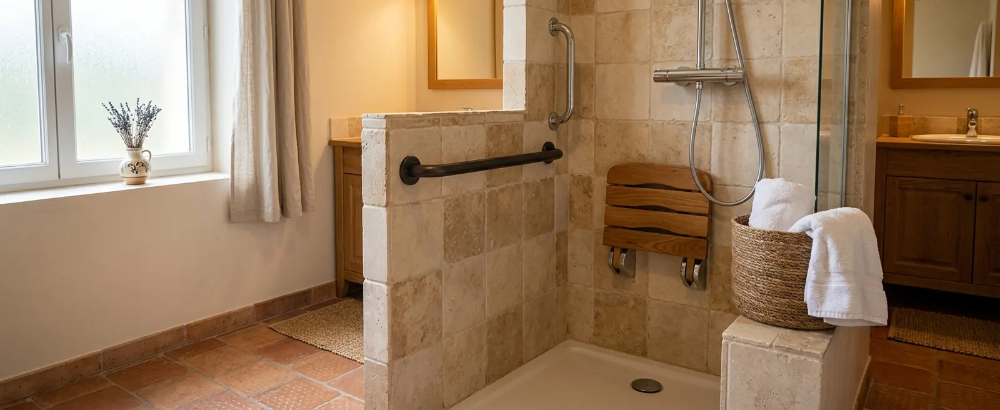

À retenir
- ·Sécuriser l’existant : 500 – 2 000 € · remplacer une baignoire : 4 000 – 9 000 € · refaire la pièce : 8 000 – 15 000 € (estimations nationales 2026).
- ·Les premiers facteurs de coût : l’état de la plomberie, le type de receveur et le revêtement des murs.
- ·Des aides (MaPrimeAdapt’ notamment) peuvent couvrir 50 à 70 % des dépenses éligibles, sous conditions.
- ·Seul un devis établi après visite de votre salle de bain fait référence.
Le prix d’une douche senior selon le niveau de travaux
Estimations nationales 2026Le bon scénario dépend de votre installation actuelle et de vos besoins réels : inutile de refaire toute la pièce si seul l’enjambement pose problème. Pour le déroulement concret d’une transformation de baignoire, voyez notre guide Remplacer une baignoire par une douche ; pour choisir le niveau d’adaptation, Douche senior ou douche PMR.
Que comprend le prix d’une douche senior ?
Un devis complet couvre bien plus que le bac à douche. Pour comparer deux devis, vérifiez que chacun détaille ces postes :
- ·Dépose de la baignoire ou de l’ancienne douche, et évacuation des gravats
- ·Plomberie : adaptation de l’évacuation et des arrivées d’eau
- ·Receveur et son calage, ou forme de pente pour le plain-pied
- ·Étanchéité des murs et du sol — le poste invisible mais décisif
- ·Revêtement mural : panneaux ou carrelage
- ·Paroi vitrée ou rideau, selon l’accès souhaité
- ·Robinetterie thermostatique et douchette accessible
- ·Équipements : siège, barres d’appui sur renforts
- ·Finitions : joints, raccords de sol, reprises de peinture
- ·Main-d’œuvre — souvent 40 à 50 % du total
Receveur, murs, équipements : les trois choix qui pèsent
Du receveur standard (le plus économique, seuil de quelques centimètres) à l’extra-plat (le meilleur compromis accès/travaux) jusqu’au plain-pied à carreler (le plus accessible, mais qui exige d’encastrer l’évacuation dans le sol). Le produit seul reste modeste ; c’est sa mise en œuvre — pente, drainage, étanchéité — qui creuse l’écart.
Les panneaux étanches se posent vite (souvent sur l’ancien carrelage), limitent les joints à entretenir et raccourcissent le chantier. Le carrelage offre plus de choix esthétique mais ajoute préparation, temps de pose et joints. À budget égal, les panneaux font souvent gagner plusieurs jours de travaux.
Siège rabattable, barres d’appui fixées sur renforts, douchette sur barre réglable, mitigeur thermostatique anti-brûlure, sol à glissance réduite : quelques centaines d’euros chacun, à intégrer dès la conception — ajouter des renforts muraux après coup coûte bien plus cher que de les prévoir.
Ce qui fait grimper un devis
- ·Déplacer l’évacuation — changer l’emplacement de la douche implique de reprendre pente et drain : le surcoût le plus fréquent.
- ·Les découvertes à la dépose — humidité derrière l’ancienne baignoire, plancher affaibli, murs à reprendre avant toute étanchéité.
- ·L’électricité et la ventilation — mise en conformité des volumes de sécurité, VMC absente ou insuffisante.
- ·Le sur-mesure — parois vitrées à dimensions spéciales, receveur hors standard, découpes complexes.
- ·L’accès au chantier — étage sans ascenseur, copropriété avec contraintes horaires, protection des parties communes.
Bon à savoir — conserver l’emplacement existant de la baignoire ou de la douche neutralise d’un coup les deux premiers postes de surcoût. C’est le principe du remplacement « dans l’emprise », détaillé dans notre guide du remplacement de baignoire.
Trois exemples de budgets
Scénarios fictifs à titre pédagogique — chaque projet réel passe par un devis après visite de la salle de bain.
Deux barres sur renforts, siège rabattable, mitigeur thermostatique, tapis de sol adapté. Devis type : 1 400 €. Inclus : fournitures et pose. Non inclus : reprise de carrelage.
Dépose, receveur extra-plat 160×75, panneaux muraux, paroi fixe, siège et barres. Devis type : 6 800 €. Ménage modeste éligible MaPrimeAdapt’ (50 %) : reste à charge ≈ 3 400 €.
Douche de plain-pied carrelée, évacuation encastrée, étanchéité complète, paroi sur mesure. Devis type : 9 500 €. Ménage très modeste éligible (70 %) : reste à charge ≈ 2 850 €.
Les aides peuvent-elles réduire le reste à charge ?
Oui, sous conditions : l’adaptation de la salle de bain est au cœur des travaux couverts par MaPrimeAdapt’ — 50 % ou 70 % des dépenses éligibles selon vos ressources, dans la limite de 22 000 € de travaux. L’APA, la PCH, les caisses de retraite et certaines aides locales peuvent aussi intervenir selon votre situation. Conditions, étapes et erreurs à éviter : notre guide MaPrimeAdapt’.
Attention — tout projet n’est pas financé : les aides dépendent de votre âge ou situation d’autonomie, de vos ressources et de la validation du dossier. Ne commencez pas les travaux avant les accords, et signez le devis « sous réserve d’obtention des aides ».
Lire un devis et maîtriser le budget
Un devis sérieux est établi après visite et détaille ligne par ligne : dépose et évacuation, receveur, étanchéité, revêtement mural, paroi, plomberie, électricité, siège et barres, finitions, délais, garantie et — surtout — ce qui n’est pas inclus. Un devis d’une seule ligne « douche senior complète » ne se compare à rien.
Pour maîtriser le budget sans rogner sur l’usage : conservez l’emplacement existant, préférez des dimensions standard, comparez panneaux et carrelage, choisissez siège et barres dès la conception (renforts posés avant finition) et demandez comment sont traités les imprévus découverts à la dépose — au forfait ou sur avenant chiffré.
Estimer votre projet de douche adaptée
Indiquez votre installation actuelle, la solution recherchée et votre code postal pour vérifier les possibilités dans votre secteur. Gratuit et sans engagement.
Questions fréquentes sur le prix
Combien coûte une douche senior, pose comprise ?
De 3 000 à 6 000 € pour une douche préfabriquée adaptée et de 4 000 à 9 000 € pour un remplacement de baignoire, pose comprise (estimations nationales 2026). Une simple sécurisation de l’existant descend à 500 – 2 000 €.
Une douche de plain-pied coûte-t-elle plus cher ?
Généralement oui : encastrer l’évacuation dans le sol, créer la pente et assurer l’étanchéité ajoutent des travaux qu’un receveur extra-plat évite. L’extra-plat offre un accès presque équivalent pour un budget inférieur quand le sol ne permet pas l’encastrement.
Combien coûtent un siège et des barres d’appui ?
Quelques centaines d’euros posés, renforts compris, selon les modèles. L’essentiel est de les prévoir dès la conception : poser des renforts muraux après les finitions coûte nettement plus cher.
Peut-on adapter une douche existante sans tout refaire ?
Oui, si la douche est déjà praticable : barres, siège, douchette, mitigeur thermostatique et sol adapté forment le scénario « adaptation légère » (500 – 2 000 €). Il ne règle pas un seuil trop haut ni une cabine trop étroite.
La plomberie est-elle comprise dans le devis ?
Elle doit l’être, en ligne distincte : adaptation de l’évacuation et des arrivées d’eau. Vérifiez aussi que la dépose de l’existant et l’évacuation des gravats figurent au devis — leur absence est une source classique de supplément.
Quels imprévus peuvent augmenter le prix ?
Les découvertes à la dépose : humidité derrière la baignoire, plancher affaibli, murs à reprendre. Demandez avant signature comment ces cas sont chiffrés (avenant, taux horaire) — un bon professionnel a une réponse écrite.
MaPrimeAdapt’ peut-elle financer une douche senior ?
Oui : l’adaptation de la salle de bain fait partie des travaux éligibles, à hauteur de 50 % ou 70 % des dépenses retenues selon vos ressources, sous conditions d’âge ou d’autonomie. Voir les conditions détaillées.
Combien de temps durent les travaux ?
De quelques heures pour une adaptation légère à 2 – 5 jours pour un remplacement de baignoire avec panneaux muraux, davantage pour un plain-pied carrelé ou une pièce complète. Le calendrier précis figure au devis.
Comment obtenir un prix adapté à mon logement ?
Décrivez votre installation actuelle et votre code postal : si un professionnel indépendant intervient dans votre secteur, il peut vous recontacter pour visiter la salle de bain et établir un devis personnalisé — la seule estimation qui engage.
Sources
Les fourchettes de ce guide sont des estimations nationales. Elles ne constituent pas un devis.